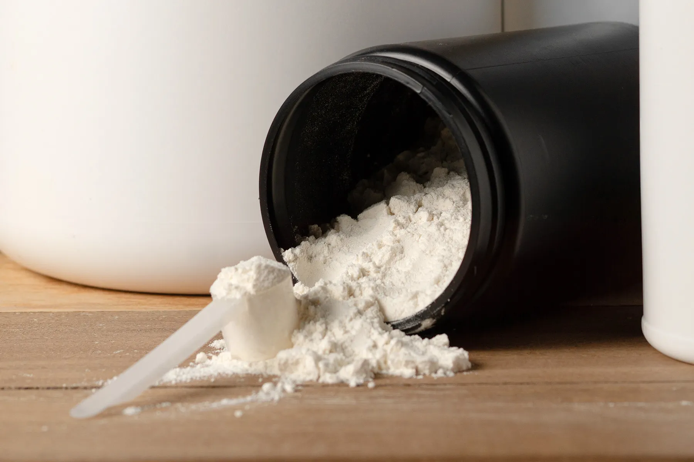

Креатин — доказана добавка за сила и енергия
Креатинът е едно от най-добре проучените и ефективни вещества за повишаване на мускулната сила и маса. Той подпомага производството на аденозин трифосфат (АТФ) — основният енергиен източник в мускулните клетки.
Ползи
- Увеличава силата и експлозивността.
- Подобрява обема и плътността на мускулите.
- Подпомага възстановяването след тежки тренировки.
- Подобрява когнитивната функция при умора.
Дозировка
Препоръчителна доза: 3–5 г дневно. Зареждащата фаза (20 г/ден за 5–7 дни) не е задължителна. Креатинът може да се приема по всяко време на деня, но след тренировка е най-ефективен в комбинация с въглехидрати и протеин.
Безопасност
Креатинът е безопасен за дългосрочна употреба при здрави хора. Единствените чести ефекти са леко задържане на вода и временна промяна в теглото. Препоръчва се добра хидратация по време на приема.